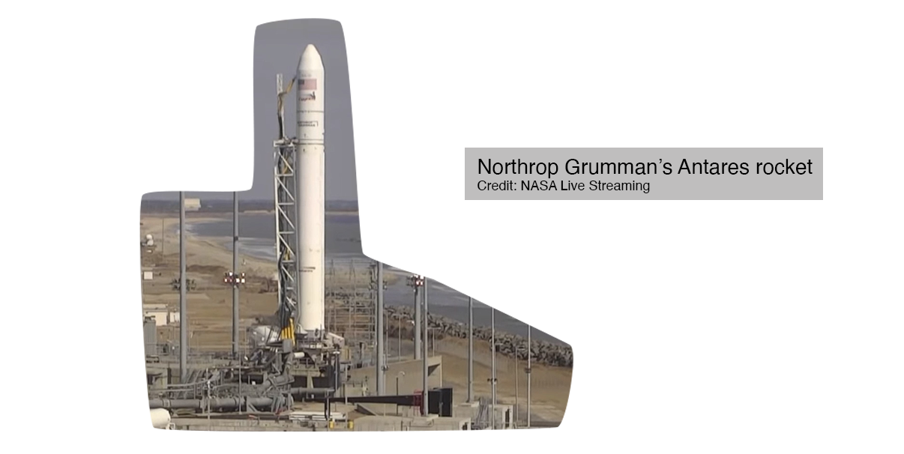
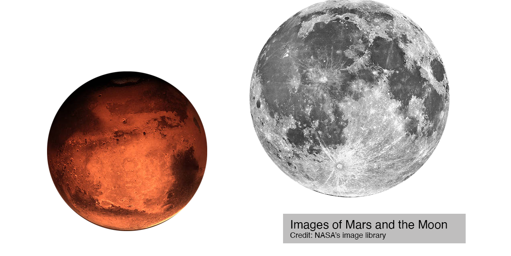
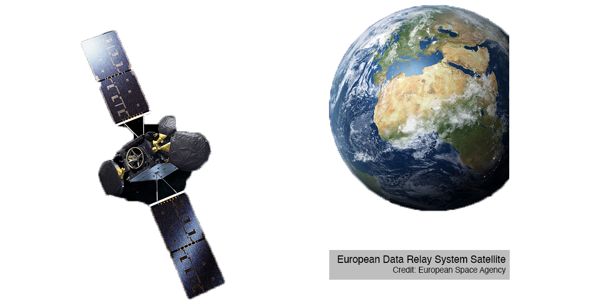
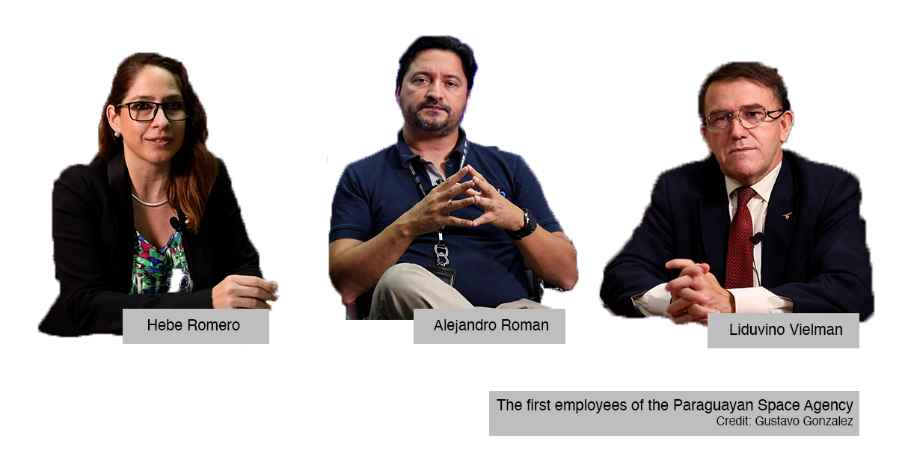
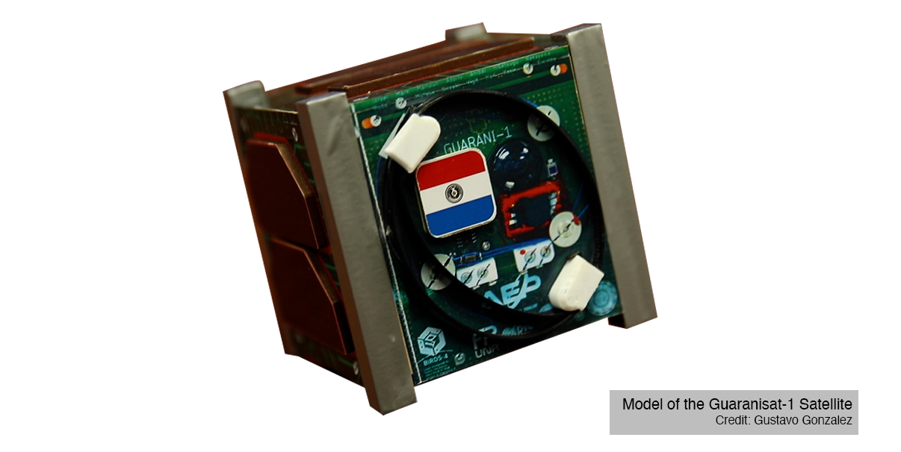

On Feb. 20, Northrop Grumman’s Antares rocket sat under relatively clear skies on pad 0A at NASA’s launch site on Wallops Island, Va. At exactly 12:36 p.m. it began its journey to the International Space Station. Along with food for the astronauts, supplies and technology equipment, it carried a small CubeSat. This 10-by-10-by-10-centimeter miniature satellite had millions of Paraguayans glued to their screens, eagerly waiting for the launch, which was broadcast live on national television. To them this launch meant much more than a routine space flight: it represented their ticket into the space industry.
Antares rocket launch on Feb. 20, 2021.
Just a decade ago, it was inconceivable that Paraguay would invest a dime in space. A quarter of the population lived below the poverty line. Access to clean drinking water, healthcare and education continues to be more urgent matter. Investing in space was reserved for a few rich countries; most developing countries couldn’t dream of participating.
But things have changed.
Two of the biggest barriers keeping developing countries out of the satellite industry -- price and knowledge -- have been lowered by a growing commercial market, making room for countries with limited resources that had no chance to participate in the space industry before but now see opportunity.
Veronica Cesco leads the Space Economy Initiative at the United Nations Office for Outer Space Affairs (UNOOSA). Her team works to strengthen international cooperation, establish the legal framework and help developing countries participate in space.
Veronica Cesco, Associate Program Officer, UNOOSA
But the price of entry to space hasn’t changed all that much. Space was traditionally led by the military, but today private investment represents 80% of spending in space.
The increase in public-private contracts made way for a space industry that is worth over $400 billion today and is projected to be a trillion-dollar economy by 2040.
Colonizing Mars, returning to the moon, mining asteroids, becoming an interplanetary species -- plans like these seem to belong in a science-fiction novel, but they are in the works to become a reality. They are so impressive that they’ve become the main headlines when it comes to space, but today the space industry is mostly composed of activities directly related to ordinary needs here on Earth, like making phone calls.
Danielle Wood, Director, Space Enabled Research Group, MIT Media Lab
The satellite sector is the biggest revenue-generator in the global space economy -- no surprise, as it provides everyday services. Communication satellites, for example, are used for internet, radio, TV and telephone applications. Remote sensing satellites are used for environmental monitoring and meteorology, navigation satellites for GPS.
The United States is still clearly the leader in this segment, and one of the few countries with launching capabilities. Nonetheless, the reduced launch and production costs paired with an increase in knowledge-transfer programs are opening up the market.
Danielle Wood, Director, Space Enabled Research Group, MIT Media Lab
Satellites have become, depending on their complexity and price, an entryway for countries new to investing in space or an achievable challenge for those with more developed space programs.
From 2014 to 2019, 16 countries established national space agencies. Paraguay was one of them.
Paraguay’s space agency, the Agencia Espacial del Paraguay (AEP), was officially created in 2014, but it didn’t start operations until it was funded in 2017. A small budget of US$500,000 -- less than 1% of Paraguay’ s national GDP was allocated.
Col. Liduvino Vielman, Alejandro Roman and Hebe Romero were among the first employees.
At the time, most people didn’t see the value of investing in a national space program, but it didn’t take long before the agency showed its importance.
Alejandro Roman, Director of Aerospace Development AEP, Paraguay
As the industry expands, space debris is a growing concern. The number of satellites orbiting Earth is increasing at a worrisome rate. As they, and the spacecrafts that transported them, become obsolete, they add to space traffic. NASA has counted over 27,000 pieces of orbital debris around the planet, and even the tiniest piece could create huge problems.
Being prepared to deal with space debris is one of the reasons any country needs at least a basic understanding of space technology. For this reason, the AEP’s successful retrieval of the rocket’s fuel tank was a clear demonstration of the agency’s value. But the vision of the Paraguayan space agency’s leaders goes far beyond.
Agencia Espacial Del Paraguay (AEP) - Paraguayan Space Agency
Paraguayans don’t need to look far to see how space technology would directly benefit them. In fact, by the end of 2020 all but four in South American countries had launched their own satellites to space. Paraguay’s neighbors Brazil and Argentina were the pioneers in the area, starting their operations in the 1960s.
A recent and very significant achievement for the Argentinean Space Agency, CONAE, is its Earth observation satellite constellation, SAOCOM. The project stemmed from a request from the Argentinian National Agriculture Technology Institute, INTA.
Agriculture generates 40% of Argentina’s exports, and INTA expressed the need for soil humidity maps with the capacity to detect not only surface humidity, but up to 2 meters underground. Therefore, a custom technology was necessary: an L-band type of radar, that emits microwave pulses that penetrate surfaces to collect data. In August 2020, CONAE launched its second SAOCOM satellite, an achievement celebrated not only by Argentina but also by Italy, its partner in a bigger endeavor.
Italy launched its own constellation of four satellites called COSMO-SkyMed. These four are more suitable for security, defense and intelligence applications, and therefore use X-band radars, these emit microwave pulses that collect data that reflect on surfaces.
The two countries entered a partnership and designed their satellites in a way that allows them to combine these two opposite types of data, forming the first European-American constellation of Earth observation, SIASGE. It provides a detailed and broad view of Earth, used to monitor and mitigate the effect of natural disasters such as fires, floods, eruptions, earthquakes and avalanches.
It also resulted in a major technological spillover – an unintended benefit resulting from the development of another product at no additional cost. CONAE’s main contractor for the development of the radars is an Argentinean technology company called INVAP. INVAP applied the knowledge obtained from the production of the satellites to creating air traffic radars. Today they are distributed in airports across Argentina, saving the country $500 million on imported equipment.
Raúl Kulichevsky, director of CONAE, was involved in the early stages of the SAOCOM’s development. He is a firm believer that having a native satellite brings unique value to countries, even if more developed agencies are ahead in the game.
Raúl Kulichevsky, Director of CONAE, Argentina
Agriculture makes up 64% of Paraguay’s exports and 11.4% of the gross domestic product. Developing satellites like SAOCOM would make a huge difference in its competitiveness, but this type of technology required millions of dollars in investment and years of developing human resources.
Jose Medina is the founder of SpaceLatam, a consultant firm that advises the emerging space industry in Latin America.
Jose Medina, CEO, SpaceLatam and Ottavia Pesce, Communication Officer, UNOOSA
Paraguay participated in this program, sending two engineers, Adolfo Jara and Aníbal Mendoza, to Japan in 2018. Jara focused on software development and Mendoza on hardware.
In two years, they built the first satellite made by Paraguayan hands. The CubeSat was named Guaranisat-1 in honor of Paraguay’s first inhabitants: the Guarani indigenous people. Its main objective was capacity-building, but it also had 10 technical missions. One was to combat Chagas disease, a deadly parasitic disease currently afflicting an estimated 6 million to 8 million Latin Americans.
Paraguayan medical institutions have conducted extensive research on the disease, and they partnered with the AEP to obtain data that until then had been unobtainable. Jara worked with them and the affected communities so that the Guaranisat-1 could help.
They installed traps in the most affected areas to study the insects that carry the disease. The traps contain sensors that transmit the data to the Guaranisat-1, which is then analyzed by the AEP engineers and returned to the researchers to find an effective solution.
Alejandro Roman, Director of Aerospace Development AEP, Paraguay
Guaranisat-1 was successfully launched on Feb. 20, and less than a month later, on March 14, it was deployed from the International Space Station. Today it is on track to achieving its missions.
Paraguay’s investment in space is small compared to projects from space agencies with more money and trajectory, but in a way, it says a lot more about the future of space.
It shows just how predominant space technology is in our lives, to the point where it has become a necessity even for less developed nations, and how today, even with a small amount capital and resources, countries can make strides toward become spacefaring nations.
Over 70 countries are already operating space programs, and many more are showing interest. As global participation grows, the space sector is increasingly accessible, allowing small agencies like the AEP to dream even bigger.